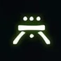
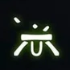

Opening encounter
After completing opening encounter and going through the portal, jump on the first swinging lamp and turn around. The circle is directly below the platform below you.
On the wall directly behind the first secret chest.
Totems
In the left side room afte rth totems encounter, on the balcony where the knights spawn, towards the right side.
War Priest
On the wall by the right side balcony.
Inside the final hole of Golgoroth's maze, before the exit.
Golgoroth
The lower floor room in Golgoroth's arena
Next to the hidden chest in the second jumping puzzle
On the ceiling of the door leading out of the area with the second jumpin puzzle.
Daughters
Above the door in the final arena.